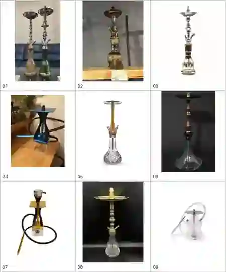
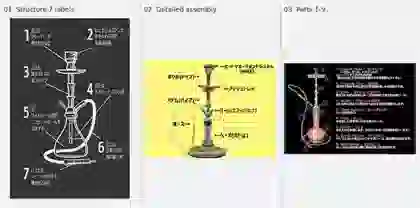
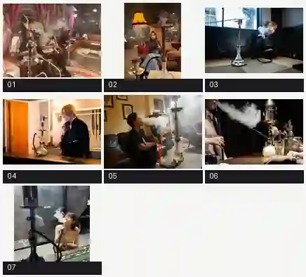
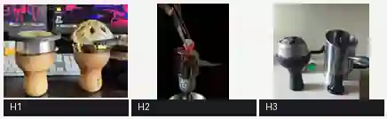
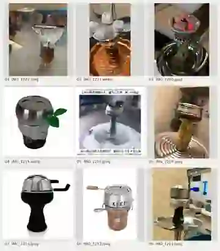
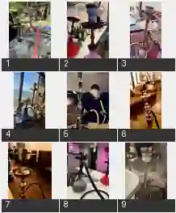
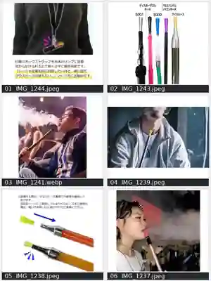
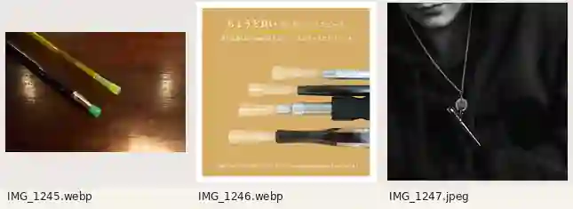
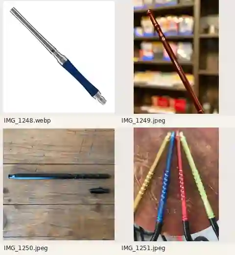

画像生成の前に見る1枚。オーナー提供の実物写真37点・構造図3点・不採用の生成例3点と、各ルール資料の要点をまとめた早見表。
形・色・装飾は自由。部品の積み順・ホースのつながり・縮尺だけは崩さない。
数値は代表例（ONMO／Kaloud Lotus I+ 等の公表寸法）。実際は選んだモデルの寸法と、装着状態・手持ちの実写を優先する。
| ボウル未装着の台 制作画面 | 台の先端は小さな凸型の金属ポスト。大きなボウル一体型にしない |
|---|---|
| 詰める・アルミ・穴あけ | ハガル＋（アルミ）。炭・HMDはまだ載せない。アルミは口に平らに張り、縁で折り込む |
| 炭を焼く・置く | トングで小さな角炭を扱う。ゲームの基本は外周の三角に3個（写真の2個・4個で置き換えない） |
| 完成・喫煙・吸い出し 日常・タイトルCG | HMDを必ず使う。直炭（アルミに直接炭）はNG。HMDは1枚につき1モデルに決め、別モデルの蓋・煙突・取手を混ぜない |
| 吐く煙 | 煙は人物の口元から。HMD・ホース根元・チェーンから常に出さない |
| マイチップを携帯 | 首掛け＝チェーン＋留め具＋吸い口本体。ホースとは別 |
| 台を描かない指定 | 無理に台を足さない |
色・素材・装飾は場面に合わせて創作してよい。写真の完コピ・ロゴ・文字は描かない。画風はゲームのピクセルペインター調を優先。
ホースが3方向に枝分かれ。ポートとハンドルは正しくても、途中の管が合流・分岐していれば不採用。
小さくした修正で脚まで潰れた。器・脚・口径を実物の脚付きボウルと別々に照合する。
ハガルが短く、ホースが人物を囲む輪になり、画面外から台の裏へ戻るように見える。
原寸で見て、1つでもNGなら直すか再生成する

README.md
anatomy-diagrams
smoking-and-heat…
smoking-and-heat…
heat-management-closeups
usage-and-installation
hose-and-mouthpieces
mouthpiece-handle-skins
mouthpiece-handle-skins